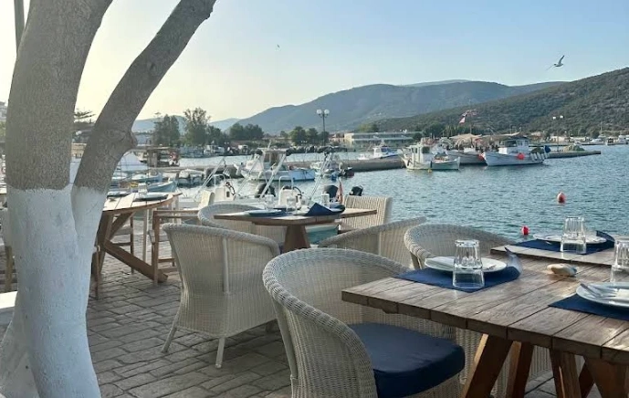
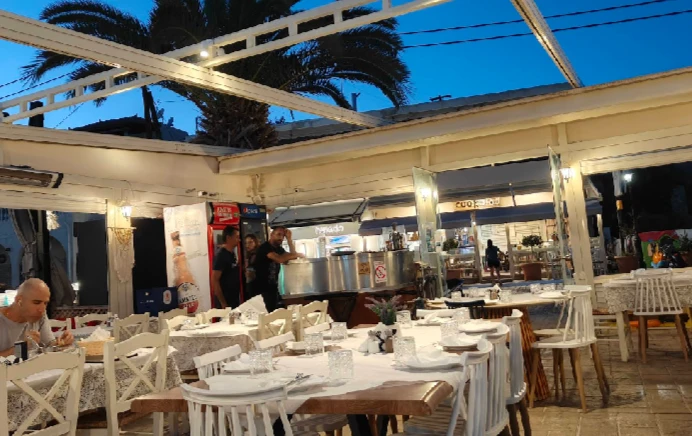
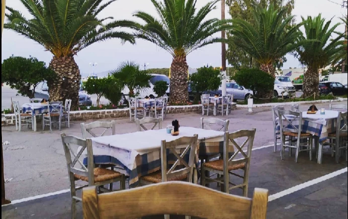
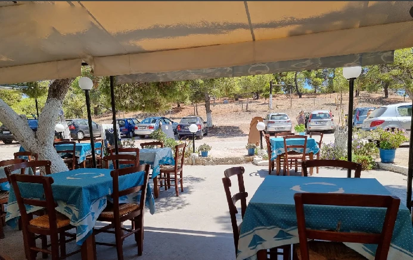
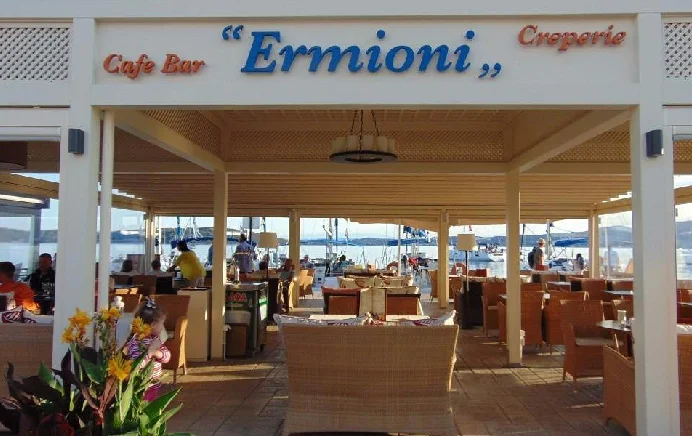

Commerces à proximité
Où nous envoyons nos hôtes
Des adresses que nous apprécions nous-mêmes, toutes situées à quelques minutes en voiture de la maison,
à Ermioni et dans les environs.
Nos recommandations
Des tavernes, des terrasses et un bon café

Restaurant du port d'Ermioni
Maria's All-Day Restaurant
Exceptionnel ! Situé au cœur du port et offrant une vue imprenable sur la baie d'Ermioni, vous y serez accueillis avec le sourire par Maria en personne. Tous les plats sont excellents, toujours frais et faits maison, et les portions sont généreuses. L'ambiance y est détendue et paisible. Laissez-vous guider par Maria ; elle se fera un plaisir de vous recommander des plats de la carte. Ce restaurant est également superbe le soir, à la lueur des bougies.

Pizzeria terrasse en bord de mer
Cookoida
D'excellentes pizzas. Un service extrêmement attentionné et sympathique… Bref… N'hésitez pas à venir savourer un délicieux repas sur la terrasse – couverte ou en plein air – avec vue sur la mer.

Taverne - près de la place du marché
Taverne Karavaki
Pour les connaisseurs, c’est exactement le genre de taverne que l’on adore. Un peu à l’écart, près de la place du marché. Pas de vue sur la mer, pas de chichis ni de fioritures, mais de délicieux mezze. On y dîne parmi les habitants, avec peu de touristes, et c'est un vrai régal. Un accueil très chaleureux, tout en sourires. Les rougets (barbounia) sont incroyablement frais. Excellente fava, kolokithokeftedes et taramosalata.

Taverne traditionnelle
Taverna « Le Bisti »
Une taverne grecque traditionnelle. La décoration n’est certes pas à la hauteur de celle des tavernes du port, mais la cuisine y est excellente. Parfois, ce qu’il y a dans l’assiette prime sur un décor sophistiqué et une cuisine médiocre. L’endroit est très calme et dispose d’un immense parking juste en face. Le service est très sympathique et enjoué, les prix extrêmement raisonnables. Peu de touristes et beaucoup d’habitants du coin.

Café et cocktails - en bord de mer
Café Bar Ermioni
C'est un vrai plaisir de se détendre sur les canapés face à la mer. Vous pourrez y déguster de délicieuses glaces ou des sorbets. C'est l'endroit idéal pour prendre un cocktail ou un verre… L'accueil y est très chaleureux et souriant. Le personnel prend le temps de discuter un peu avec vous.